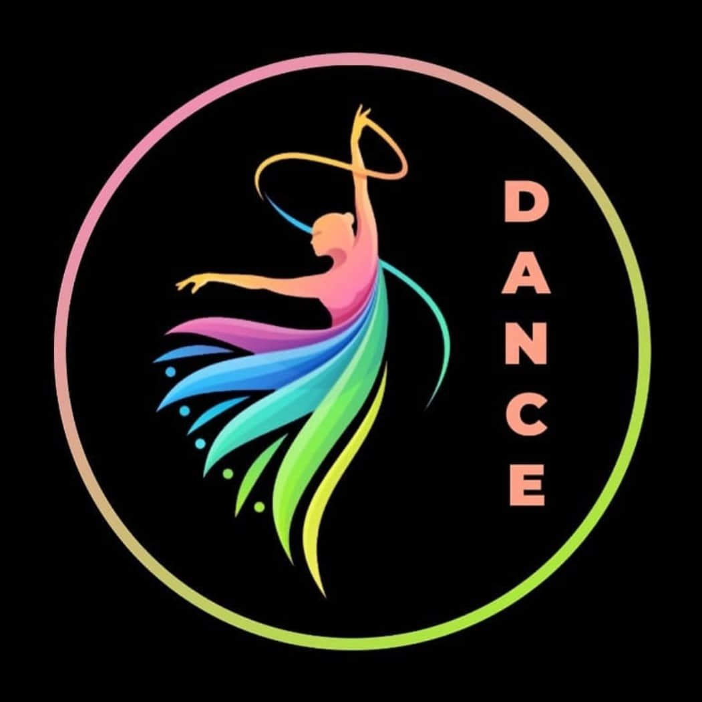

Dance Club
The club is the combination of many dynamic and talented professionals from different genres of practice, where they can nurture their talent, celebrate their diversity, and express the creative fluidity of young minds. The club makes the students adapt creative, fun, and easy ways of learning dance and enables them to be fit and socialise. It is the perfect platform for dance enthusiasts and dance professionals to come together.
Some known dance groups are:
- Gang DNA
- Jatt Squad
- Advaya